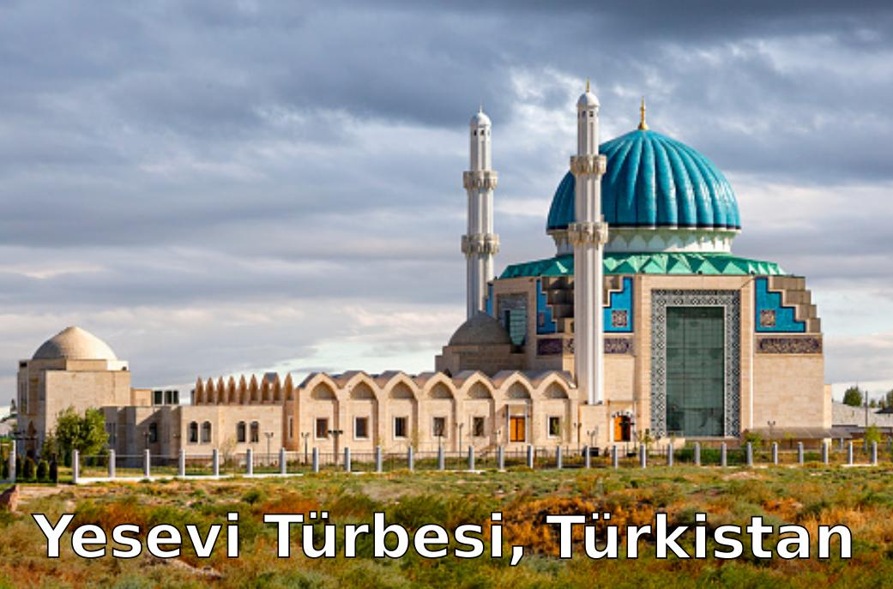

Divan-ı Hikmet ─ Yesevi
 Divan-ı Hikmet, Türk edebiyatının bilinen en eski tasavvuf örneklerini içeren Hoca Ahmet Yesevi'nin hikmeleri.
Türk edebiyatının diğer üç önemli eseri olan Kutadgu Bilig, Divanı Lügat-it Türk ve Atabetül Hakayık kitapları ile birlikte bilinen en önemli eserdir. Bu kitapların tamamı Türk edebiyatının en eski ve en önemli ana eserleridir.
Hikmetler:
- Bismillâh dep beyân eyley hikmet aytıp
- Eyâ dostlar kulak salıng ayduğumğa
- Her subhidem nidâ keldi kulağımda
- Huş gayibdin kulagımğa ilhâm keldi
- Nâgehân tururımda kamuğ buzrug
- Yâ İlâhım hamdıng birle hikmet ayttım
- "Kul huvallâh" "subhânallâh" vird eylesem
- Subhı sadık düşenbe kün yerge kirdim
- Eyâ dostlar hasb-i hâlim beyân eyley
- Hak Teala fazlı birle ferman kıldı
- Eya dostlar pak ışkını kolga aldım
- Tealallah aşıklarga berdi ışkın
- Ol Kâdirim kudret birle nazar kıldı
- Eya dostlar nâdân birle ülfet bolup
- "Fezkürullah kesiran" dep ayet keldi
- Vâ-deriğâ neçük kılğum garibliğde
- Köngil közi yarutmayın tâat kılsa
- Huş gayibdin yetüşti yahşı sözüm teberrük
- Kudret birle Hakk'dın sizge ferman boldı
- Muhabbetni câmın içken divâneler
- Asi câfi kulung keldi dergâhingge
- Huş kudretliğ Perverdigar Bir u Barım
- Kad allemna ente fikülliumur
- Hudavenda meni salgıl öz yolunga
- Rahmân İgem rahmetingni câri kılğıl seherde
- Rahim Mevlam rahmi birle yâd eylese
- Rahmetingdin nevmid kılma men garibni
- Ömrüm âhir bolğanda ne kılğaymen Hudâ yâ
- Kahhâr atlığ kahrıngdın korkup yığlar Hâce Ahmed
- Könglim kuşı uçsa daim kanat tokub
- Ming tümen türlük hatâlar mendin ötse afv kıl
- İlah a Kadir a Perverdigâr a
- Işk yolıda fenâ bolay Hak Bir ü Bar
- Eyâ şâhı dü alem pâdşâhı
- Işkıng kıldı şeydâ meni cümle âlem bildi meni
- Muhammedni biling zâtı arabdur
- "El-kezzâbu lâ ümmeti" dedi biling Muhammed
- Nûr-ı Hüdâ dost-ı Hüdâ ol Mustafa
- Bizdin dürudi bisyar ya Mustafa Muhammed
- On sekkiz ming âlemge server bolğan Muhammed
- Miskîn Ahmed kulığa kitâbetliğ Muhammed
- Körgen zamân inangan Ebubekr sıddıkdur
- İkkinçisi yâr bolgan adâletliğ Ümer'dür
- Üçünçi dostı yâr bolgan Osmân-ı bâhayâdur
- Törtünçisi yâr bolgan şir-i Hudâ Ali'dür
- Bir kün keldi Ebubekr, Selman birle
- Ol "Elestü birabbiküm" degeninde
- Muhabbetni deryaside gevvas bolup
- Kayu yerde azizlemi cem'i bolsa
- Muhabbetni bostanıga bülbül kebi
- Muhabbetni bâzârında cevlân kılıb
- Vahdet humı açıldı meyhânege kirsem men
- Allah degen bendeni câyın cennetde kördüm
- Yolğa kirgen erenlerdin yolnı sormay
- İzim yâdı uluğ yâddur aytur bolsam
- Tınmayın hazretingde Allah desem
- Allâh'ımnı izlermen izin alıb ketermen
- Nâgehan tururumda könglüm içre
- Eyâ dostlar yürek bağrım boldı kebab
- Hakk Te'ala pertev saldı canım küydi
- Işk otını pinhân tutup asrar erdim
- Hâlık'ımnı izlermen tün-kün cehân içinde
- Seherlerde kobub yığlab dua kılsam
- Bu âlemde Hakk'dın korkub zâr ingresem
- Her subh-dem boynum kısıb "Rabbi" desem
- Sensin meni penahım dep yolğa kirsem
- Niyet kıldık Ka'bege rızâ bolung dostlarım
- Közüm nemlik, dilim gamlık, can elemlik
- Eyâ dostlar harâblıkda kattı başım
- Ukbâ haberin eşitib dünyânı salıb keterem
- Huşlamaydur alimler sizni aygan Türki'ni
- Eyâ dostlarım ölsem men bilmem ki hâlim ne bolur
- Neçe yıllık mehribânım cân ediler dostlarım
- Ömrüm zayi' gaflet birle yel dek ötti
- Hiç bilmedim neçük keçti ömrüm mening
- Her kim kılsa tarikatnı da'vâsını
- Şeriatnı şeraitin bilgen aşık
- Keling dostlar Allah yâdın daim aytıng
- Yaratkan Bir ü Bar'ım yolın izleb
- Eyâ dostlar beyân eyley Hak Resul'dın
- Didâr üçün cânnı kurbân kılmagunça
- Hakk'a yanıp mü'min bolsang tâat kılğıl
- "Fel ya'lemunel alimüna"nı okur alim
- Muhabbetni şarabıdın içürmese
- Ruh kuşını titrer bolsa bal u peri
- Işk sırrını beyân kılsam âşıklarğa
- Kayu mahlûk Halık'ıga mûti' bolsa
- Muhabbetni câmın içib raks eylegen
- Evliyâlar aytgan vade keldi bolgay
- Bizdin selâm dostlarğa taleb yolın koymasun
- Didârını taleb kılsang ey zâkirler
- Erenler cemâl körer dervişler sohbetide
- Ne huş tatlık Hak yâdı seher vakti bolğanda
- Hû halkası kuruldı ey dervişler kelingler
- Evvel Hu ahir Hu deb bihud bolgıl
- Tınmay âşık Hû derler Hudâyığa yalbarıb
- On sekkiz ming âlemde hayrân bolğan âşıklar
- Yol üstide olturup yolnı sorgan dervişler
- Hakk kulları dervişler hakikatnı bilmişler
- Huş gaibdin yetüşti bir cemaa dervişler
- Garibliğde garib bolgan garibler
- Sübhân İzim fermân kılsa kudret birle
- Muhabbetni şevki birle yâr istegil
- Şeriatda mürşid bolğan garib kullar
- Azrail bir kün kelür şiddet birle
- Kara kündür oşal sâat ki dünyâdın sefer kılsang
- Keling dostlar barça turub aytaylık
- Keling yığlıng zâkir kullar zikr aytaylık
- Tarikatga şeriatsız kirgenlerni
- Kudret birle fermân kıldı Mevlâm bizge
- Bu dünyâda yaratılğan mahlûklarğa
- "Küllü men aleyha fan" ayetide
- "Lailahe İllallah" degen kulnı ağzıdın
- Allah yâdı nurın kimge atâ kılsa
- Arif aşık şevki birle kıyamet kün
- Her kişi körse cemaling dünya işin berbâd eter
- Melâmetğe hamr içgen didâriğa battı ya
- Hâcet ermes ışk derdiğe devâ sormak
- Ey köngül kıldırıg günâh hergiz püşeyman bolmadıng
- Aşıklıknı da’vasını kılgan kişi
- Aşık kişiler keçeleri yatmasa behrak
- Eyâ dostlar ışk gevvası bolmagunça
- Muhabbetni deryasığa çommağunça
- Ma'rifetni minberige minmegünçe
- Dostlarığa açdım İzim gevherini
- Işk da'vasın kılğan aşık giryan bolur
- Allah yâdın aytur kullar ma'nâ birle
- Eyâ dostlar bu yollarnıng ukbâsı köp
- Tatavvu' roze tutar halklarğa şeyhlik satar
- Muhabbetni küçesini kezgen arif
- Essiz bu tarikatnıng tansuk aydı
- Dem bu demdür özge demni dem deme
- Muhabbetsiz halâyıkdın her kim kaçsa
- Muhabbetni bostanıda hezar destan
- Tecellini makâmıdur aceb makâm
- Uşbu sırnı bilmegen cahil kişi
- Sübhân İzim bendesige lutf eylese
- Arif âşık cân mülkide elem tartsa
- Seher vaktde kobup yığlab nâle eyle
- Işk da'vâsın menge kılma yalğan âşık
- Tevbe kılıp Hakk'a yanğan âşıklarğa
- Hikmet birle ol ademdin bar eyledi
- Behişt duzah talaşur talaşmakda beyân bar
- Bişek biling bu dünyâ barça halkdın öter a
- Münâcât eyledi Kul Hâce Ahmed